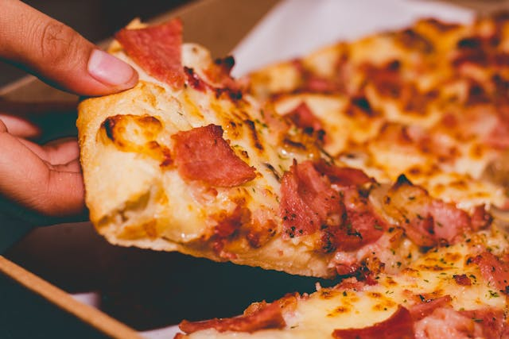

Pizza

Description
Nestled in the heart of Italy, where ancient cobblestone streets echo with laughter and tradition, pizza holds sway. A
masterpiece of simplicity and flavor, each slice whispers tales of oven-fired dough adorned with tangy tomato sauce,
creamy mozzarella, and a medley of toppings from sun-kissed olives to smoky pepperoni. With every bite, pizza transcends
mere food to become a celebration of culture, bringing joy and comfort to tables worldwide.
Ingredients
- Dough
- Tomato sauce
- Mozzarella cheese
- Pepperoni (or other toppings like mushrooms, olives, etc.)
Steps
- Prepare Dough: Roll out pizza dough into desired shape and thickness.
- Spread Sauce: Spread tomato sauce evenly over the dough, leaving a small border around the edges.
- Add Cheese and Toppings: Sprinkle shredded mozzarella cheese over the sauce. Add desired toppings such as pepperoni, mushrooms, olives, etc.
- Bake: Preheat oven to a high temperature (typically around 475°F or 245°C). Bake pizza on a pizza stone or baking sheet until crust is golden and cheese is bubbly and melted.
- Slice and Serve: Remove from oven, slice into portions, and serve hot.